Activity: Placing a parts list
Overview
This activity demonstrates the process for placing an assembly parts list on a drawing sheet.
Click here to download the activity files.
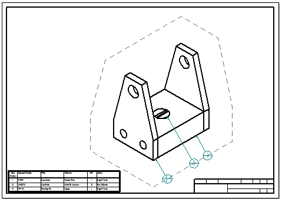
Open carrier.dft located in the Training folder.
If the Drawing Views dialog box informs you of an out-of-date drawing view, click OK. On the Home tab→Drawing Views group, choose Update Views .
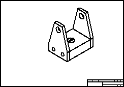
Turn on the auto-balloon option.
In the Home tab→Tables group, choose Parts List .
Select the drawing view.
On the Parts List command bar, make sure the Auto-Balloon is selected.
On the Parts List command bar, click Properties  .
.
Click the Balloon tab. Type 5 for the Text Size. Use the default balloon shape. The settings shown will place balloons which contain the item number and count.
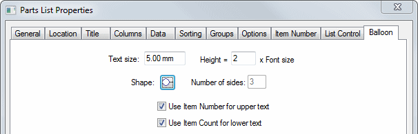
Click the Location tab.
From the Anchor corner list, select Bottom-Left.
Click the Create table on active sheet button. Select the check box for Enable predefined origin for placement.
Type 10 in the X origin: and Y origin: fields.
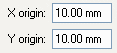
Click the Columns tab.
Select Document Number from the Properties list, and click Add Column (1) to add this to the columns list.
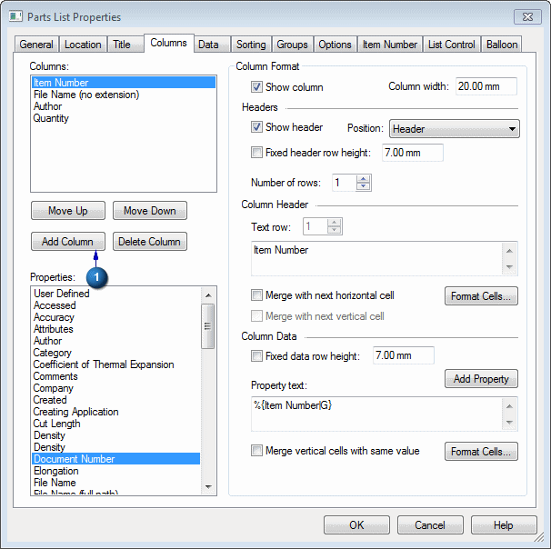
Continue defining the columns for the parts list. Use Delete Column to remove columns. Use Move Up and Move Down to arrange the columns. Set up the columns in the following order:
-
Item Number
-
Document Number
-
Title
-
Material
-
Quantity
-
Author
Click Quantity in the Columns list.
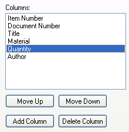
Type QTY in the Text: field (1) under the Column Header.
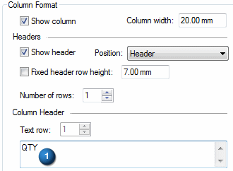
The Columns list should now look like this.
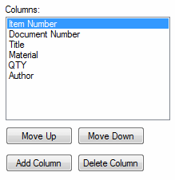
Click OK.
Now that the options are set, place the parts list on the drawing sheet.
Verify that the Place List option is selected on the command bar to include parts list with balloons.
Notice that an outline preview of the parts list size and location is visible on the drawing sheet. Click the sheet to place the parts list and balloons.
Zoom in on the parts list in the lower-left corner of the drawing.
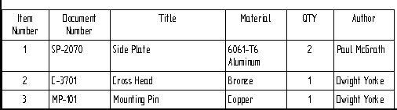
Notice the order of the columns in the parts list matches the order you assigned in the Columns tab, and the column header for Quantity is labeled as QTY. You can change the order of the columns by right-clicking the parts list and then clicking Properties. Click the Columns tab. Select the column from the list and then click Move Up or Move Down.
The dashed outline that surrounds the part view shows the default annotation alignment shape. that was generated with the parts list. You can rearrange auto-balloons using the annotation alignment shape.
Click Fit, and then zoom in on the drawing view. Notice that the balloons were placed on the drawing view, and that the balloon numbers correspond to those in the parts list.
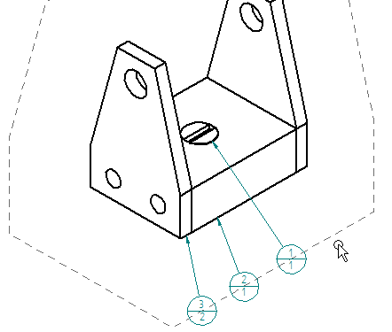
Click the dashed outline that surrounds the drawing view to display the Edit Definition command bar. On the command bar, click Order and then select the Counter Clockwise option.
The balloons update so that they are arranged in consecutive, counter clockwise order, with balloon 1 starting at the left-most position.
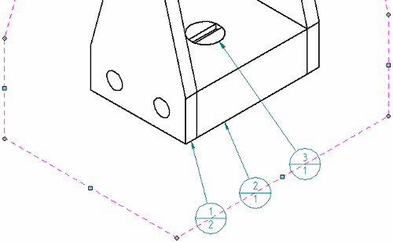
Changing the order of the balloons on the drawing view makes the parts list out of date. Right-click the parts list and choose Update. The balloon item numbers in the parts list now match those shown in the drawing view.
You can use the annotation alignment shape to reposition the balloons. Move the cursor onto the circle of balloon 1, and drag it along the alignment shape until it bumps balloon 2. Continue dragging the balloon and watch how it moves all of the balloons at once along the alignment shape, yet maintains the same balloon order.
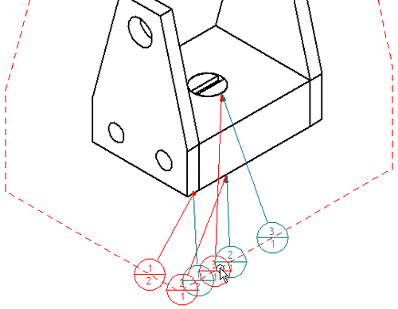
You can choose a different annotation alignment shape before you place the parts list. To do this, click Pattern option on the Balloon tab in the Parts List Properties dialog box.
Save and close the file. This completes the activity.
In this activity you learned how to create a parts list with ballooning. You learned how to format the parts list.
-
Click the Close button in the upper-right corner of the activity window.
For more information about topics not covered in the Drawings book, see: